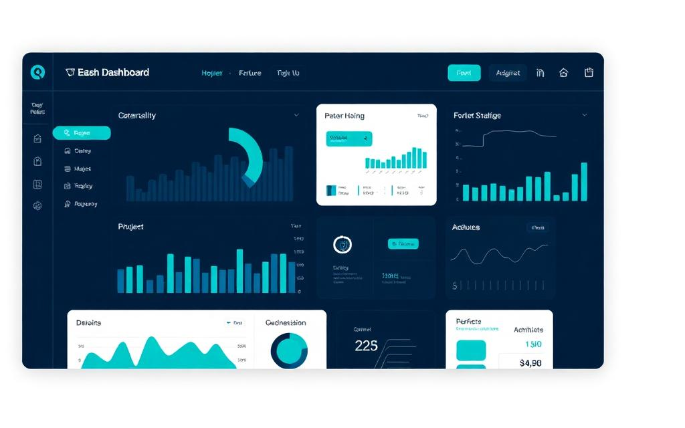
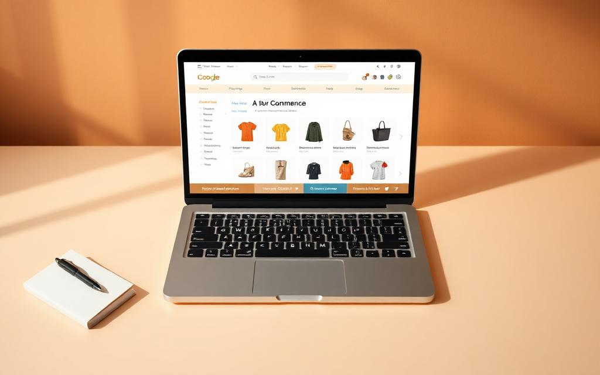
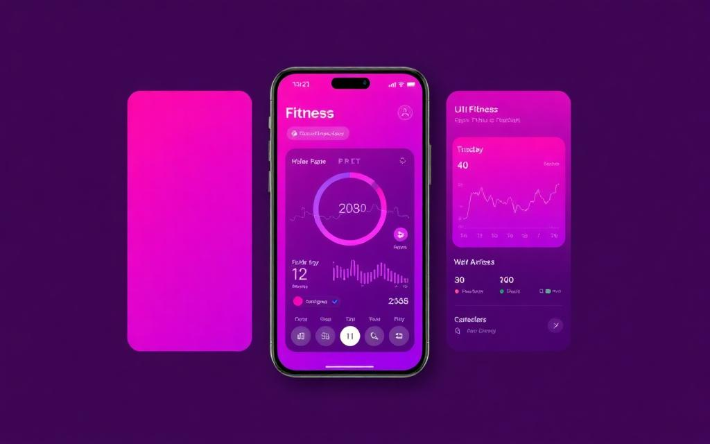

Insight — Analytics Dashboard
A responsive dashboard for visualizing student survey data with filtering, charts, and CSV export.
ReactTypeScriptChart.jsTailwind
I build clean, functional web experiences. Currently studying at PXL Hogeschool, focusing on full-stack development, UI design, and meaningful student projects.
I'm a third-year Applied Computer Science student at PXL Hogeschool in Hasselt, Belgium. My passion sits at the intersection of clean code and thoughtful design — I love building products that feel intuitive while being solid underneath.
Outside of class, I dive into side projects, contribute to small open-source libraries, and stay curious about new frameworks. I believe the best developers are also great communicators, so I make a point of explaining my work clearly to teammates and clients.
I'm currently looking for a graduate position where I can keep growing as a full-stack engineer while contributing real value from day one.
A few things I've built recently — across web, mobile, and data.

A responsive dashboard for visualizing student survey data with filtering, charts, and CSV export.

Full-stack shop with cart, Stripe-style checkout flow, and an admin panel for managing inventory.

Mobile-first workout logger with streaks, goals and progress graphs. Built as a PWA so it installs on any device.
A deep look at my second-year work placement: what I built, what I learned, and what shipped.
During my WPL2 placement at Northwave Technologies, I joined the internal tooling team building a workflow automation platform used by roughly 120 engineers across three offices. The system replaced a patchwork of spreadsheets and Slack threads with a single dashboard for tracking incident reviews, post-mortems, and follow-up actions.
My focus area was the action-tracking module: a sub-application that lets team leads create, assign, and audit follow-up tasks tied to incidents. The challenge was technical and human — the existing process was deeply embedded in muscle memory, so the new tool had to feel faster than the old workflow on day one, otherwise it wouldn't be adopted. We worked in two-week sprints, with weekly demo sessions where real users gave feedback we acted on immediately.
Over twelve weeks I went from "new intern shadowing senior devs" to owning a feature end-to-end: design discussions, ticket breakdown, implementation, code review, QA, and rollout. The final module shipped to production in week 10 and was used in three real incident reviews before my internship ended.
I was responsible for the entire front-end of the action-tracking module, plus the REST endpoints feeding it. Concretely, I built a sortable Kanban-style board, an assignment dialog with user search, real-time status updates via WebSockets, and the audit-log view that compliance needed.
On the back end I wrote the Node.js endpoints (with Express), added input validation with Zod, and worked with my mentor on the database migrations. I also wrote the unit tests for both layers using Jest, reaching about 78% coverage on the module I owned.
Beyond code, I participated in daily stand-ups, backlog refinement, and led one of the sprint demos. I documented the API in our shared Confluence space and recorded a five-minute Loom walkthrough for the support team. I also paired regularly with a senior developer, which taught me how to ask better questions and accept feedback without taking it personally.
There's more to me than commits — here's what fills the rest of the week.
I shoot mostly street and architecture with a Fujifilm X-T30. It teaches me to notice composition, light, and small details — which carries straight back into UI design.
I make lo-fi and ambient tracks in Ableton Live in my spare time. A few have ended up on small Spotify playlists, which is wildly satisfying.
Long road rides through Limburg most weekends. Best place to untangle a tricky bug is somewhere around kilometer 40.
Currently working through "Designing Data-Intensive Applications" and anything by Ted Chiang. Books in, ideas out.
I help out at a local CoderDojo, teaching kids (8–14) the basics of Scratch and HTML. Explaining things to beginners forces me to actually understand them.
Dutch (native), English (fluent), French (conversational), and slowly chipping away at Japanese with Anki.
A 3 KB no-JS weather widget you can drop into any blog.
Open-source mechanical keyboard layout visualizer.
Browser extension that estimates a page's carbon footprint.
Minimal Pomodoro timer PWA with weekly stats.
Open to graduate roles, freelance briefs and friendly chats.